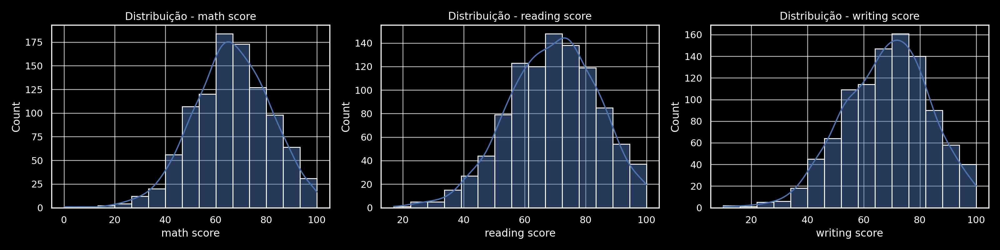
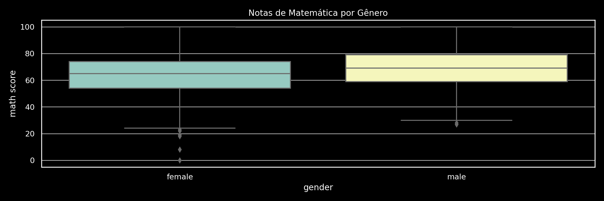
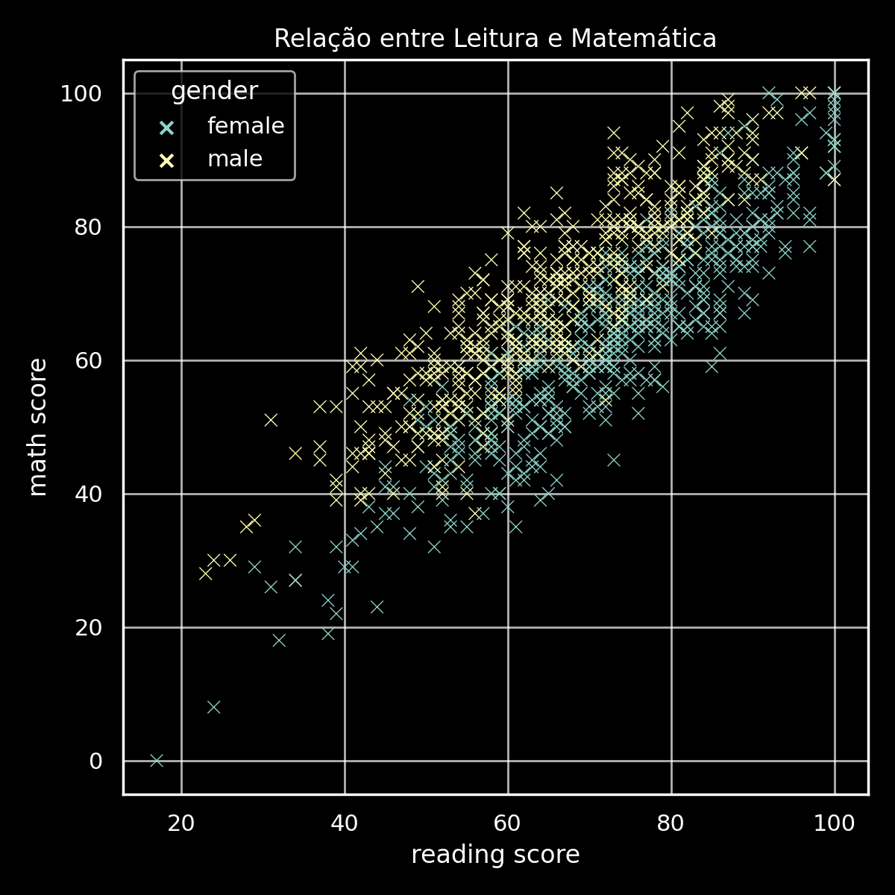
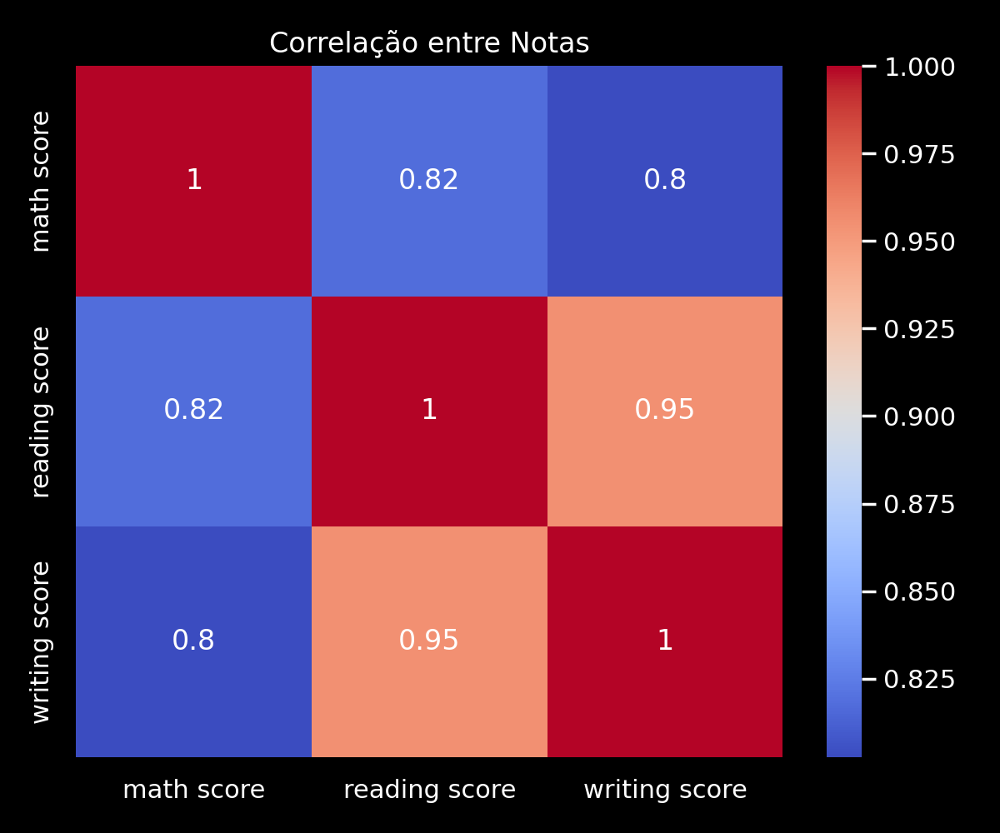

Gráficos de Análise




Código da Análise
# Análise Exploratória de Dados - Desempenho dos Alunos
import pandas as pd
import matplotlib.pyplot as plt
import seaborn as sns
# Carregar os dados
df = pd.read_csv("StudentsPerformance.csv")
# Visão geral
display(df.head())
display(df.describe(include='all'))
# Verificar valores ausentes
print("Valores ausentes por coluna:")
print(df.isnull().sum())
# Distribuições das notas
plt.figure(figsize=(16, 4))
for i, col in enumerate(['math score', 'reading score', 'writing score']):
plt.subplot(1, 3, i+1)
sns.histplot(df[col], bins=15, kde=True)
plt.title(f'Distribuição - {col}')
plt.tight_layout()
plt.show()
# Boxplot por gênero
plt.figure(figsize=(12, 4))
sns.boxplot(data=df, x='gender', y='math score')
plt.title('Notas de Matemática por Gênero')
plt.show()
# Scatter plot - Leitura vs Matemática
plt.figure(figsize=(6, 6))
sns.scatterplot(data=df, x='reading score', y='math score', hue='gender')
plt.title('Relação entre Leitura e Matemática')
plt.show()
# Heatmap de Correlação
plt.figure(figsize=(6, 5))
sns.heatmap(df[['math score', 'reading score', 'writing score']].corr(), annot=True, cmap='coolwarm')
plt.title('Correlação entre Notas')
plt.show()